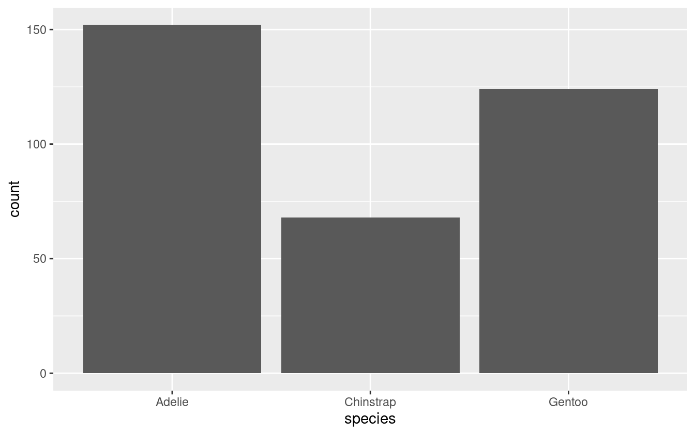
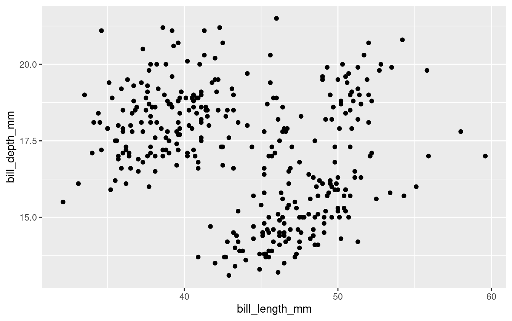

Introduction to data visualization with ggplot2
Sergio Uribe. PhD, MSc, DDS
Twitter @sergiouribe
23 July, 2022
The final product
The interface
Rstudio interface
.png)
R Studio Interface
Create an rmarkdown document
The visual editor

The shortcuts
Insert a chuck of code > Ctrl + Alt + I
Load the packages
The data
Need to be in tidy format
The Dataset


The dataset contain data for 344 penguins. There are 3 different species of penguins in this dataset, collected from 3 islands in the Palmer Archipelago, Antarctica
Exploring the dataset
Basic dataset exploration
str(penguins) # check the structure
glimpse(penguins) # similar but print friendly
dim(penguins) # check the dimensions, also available in the above
head(penguins) # check the first rows
tail(penguins) # check the last rows
names(penguins) # the names of the columns
summary(penguins) # generates a summary by variable
summary(penguins$island) # the $ allows access to a particular columnMy first ggplot graph
Question: what is the weight of the penguins?
Question: how much do penguins weigh?
Variables: numeric
Now add the aesthetics x
It’s only one variable: body_mass
and add the geom
The geom is the geometric representation of the data, i.e. histogram, boxplot, point, bar, column, etc.
Since is one variable, we’ll use geom_histogram
But we have three species!
Filter just one species
See them all!

Your turn: add a new column by sex
Bar graphs
Question: how many penguins by island?
Variables: numeric vs nominal

Reorder bars
Do all the penguins live on all the islands?
Now for two variables
Rows: 344
Columns: 8
$ species <fct> Adelie, Adelie, Adelie, Adelie, Adelie, Adelie, Adel…
$ island <fct> Torgersen, Torgersen, Torgersen, Torgersen, Torgerse…
$ bill_length_mm <dbl> 39.1, 39.5, 40.3, NA, 36.7, 39.3, 38.9, 39.2, 34.1, …
$ bill_depth_mm <dbl> 18.7, 17.4, 18.0, NA, 19.3, 20.6, 17.8, 19.6, 18.1, …
$ flipper_length_mm <int> 181, 186, 195, NA, 193, 190, 181, 195, 193, 190, 186…
$ body_mass_g <int> 3750, 3800, 3250, NA, 3450, 3650, 3625, 4675, 3475, …
$ sex <fct> male, female, female, NA, female, male, female, male…
$ year <int> 2007, 2007, 2007, 2007, 2007, 2007, 2007, 2007, 2007…We have bill_length_mm, bill_depth_mm, flipper_length_mm and body_mass_g
Body mass by species
Question: What is the body mass by species?
Variables: Numeric (body mass) vs discrete or nominal (species)
Bill length vs. depth
Question: What is the relationship between bill length & depth?
Variables: Both numeric
Bill length vs. depth

and the relationship?
But is this true?
Check by species
check again
Pimp my graph
Pimp my graph: Themes
Pimp my graph: labels
penguins %>%
ggplot(aes(x = bill_length_mm,
y = bill_depth_mm,
color = species,
shape = species)) +
geom_point() +
geom_smooth(method = "lm", se = FALSE, color = "gray50") +
theme_classic() + #choose your theme
labs(title = "Flipper and Bill length",
subtitle = "Palmer Station Data",
y = "Flipper length (mm)",
x = "Bill length (mm)",
color = "Penguin species",
shape = "Penguin species")Pimp my graph: labels
Pimp my graph: legend position
penguins %>%
ggplot(aes(x = bill_length_mm,
y = bill_depth_mm,
color = species,
shape = species)) +
geom_point() +
geom_smooth(method = "lm", se = FALSE, color = "gray50") +
theme_classic() + #choose your theme
labs(title = "Flipper and Bill length",
subtitle = "Palmer Station Data",
y = "Flipper length (mm)",
x = "Bill length (mm)",
color = "Penguin species",
shape = "Penguin species") +
theme(legend.position = c(.9, .18))End first session
========================================================
Second session
Data transformations
Data transformations
Log transformations
Log transformations
Log transformations
Log transformations with ggrepel
Data transformations
There is no analysis where you do not have to transform the data
Data transformations 1
Select()
filter()
# A tibble: 44 × 8
species island bill_length_mm bill_depth_mm flipper_len…¹ body_…² sex year
<fct> <fct> <dbl> <dbl> <int> <int> <fct> <int>
1 Adelie Biscoe 37.8 18.3 174 3400 fema… 2007
2 Adelie Biscoe 37.7 18.7 180 3600 male 2007
3 Adelie Biscoe 35.9 19.2 189 3800 fema… 2007
4 Adelie Biscoe 38.2 18.1 185 3950 male 2007
5 Adelie Biscoe 38.8 17.2 180 3800 male 2007
6 Adelie Biscoe 35.3 18.9 187 3800 fema… 2007
7 Adelie Biscoe 40.6 18.6 183 3550 male 2007
8 Adelie Biscoe 40.5 17.9 187 3200 fema… 2007
9 Adelie Biscoe 37.9 18.6 172 3150 fema… 2007
10 Adelie Biscoe 40.5 18.9 180 3950 male 2007
# … with 34 more rows, and abbreviated variable names ¹flipper_length_mm,
# ²body_mass_g
# ℹ Use `print(n = ...)` to see more rowsgroup_by() (and count() )
# A tibble: 3 × 2
# Groups: species [3]
species n
<fct> <int>
1 Adelie 152
2 Chinstrap 68
3 Gentoo 124arrange()
# A tibble: 6 × 8
species island bill_length_mm bill_depth_mm flipper_l…¹ body_…² sex year
<fct> <fct> <dbl> <dbl> <int> <int> <fct> <int>
1 Adelie Dream 32.1 15.5 188 3050 fema… 2009
2 Adelie Dream 33.1 16.1 178 2900 fema… 2008
3 Adelie Torgersen 33.5 19 190 3600 fema… 2008
4 Adelie Dream 34 17.1 185 3400 fema… 2008
5 Adelie Torgersen 34.1 18.1 193 3475 <NA> 2007
6 Adelie Torgersen 34.4 18.4 184 3325 fema… 2007
# … with abbreviated variable names ¹flipper_length_mm, ²body_mass_g# A tibble: 6 × 8
species island bill_length_mm bill_depth_mm flipper_le…¹ body_…² sex year
<fct> <fct> <dbl> <dbl> <int> <int> <fct> <int>
1 Gentoo Biscoe 59.6 17 230 6050 male 2007
2 Chinstrap Dream 58 17.8 181 3700 fema… 2007
3 Gentoo Biscoe 55.9 17 228 5600 male 2009
4 Chinstrap Dream 55.8 19.8 207 4000 male 2009
5 Gentoo Biscoe 55.1 16 230 5850 male 2009
6 Gentoo Biscoe 54.3 15.7 231 5650 male 2008
# … with abbreviated variable names ¹flipper_length_mm, ²body_mass_g# A tibble: 9 × 3
# Groups: species, year [9]
species year n
<fct> <int> <int>
1 Adelie 2007 50
2 Adelie 2008 50
3 Adelie 2009 52
4 Chinstrap 2007 26
5 Chinstrap 2008 18
6 Chinstrap 2009 24
7 Gentoo 2007 34
8 Gentoo 2008 46
9 Gentoo 2009 44mutate()
# A tibble: 344 × 9
species island bill_length_mm bill_d…¹ flipp…² body_…³ sex year weigh…⁴
<fct> <fct> <dbl> <dbl> <int> <int> <fct> <int> <dbl>
1 Adelie Torgersen 39.1 18.7 181 3750 male 2007 3.75
2 Adelie Torgersen 39.5 17.4 186 3800 fema… 2007 3.8
3 Adelie Torgersen 40.3 18 195 3250 fema… 2007 3.25
4 Adelie Torgersen NA NA NA NA <NA> 2007 NA
5 Adelie Torgersen 36.7 19.3 193 3450 fema… 2007 3.45
6 Adelie Torgersen 39.3 20.6 190 3650 male 2007 3.65
7 Adelie Torgersen 38.9 17.8 181 3625 fema… 2007 3.62
8 Adelie Torgersen 39.2 19.6 195 4675 male 2007 4.68
9 Adelie Torgersen 34.1 18.1 193 3475 <NA> 2007 3.48
10 Adelie Torgersen 42 20.2 190 4250 <NA> 2007 4.25
# … with 334 more rows, and abbreviated variable names ¹bill_depth_mm,
# ²flipper_length_mm, ³body_mass_g, ⁴weight_in_kg
# ℹ Use `print(n = ...)` to see more rowssummarise()
Data transformations 2
# A tibble: 6 × 8
species island bill_length_mm bill_depth_mm flipper_l…¹ body_…² sex year
<fct> <fct> <dbl> <dbl> <int> <int> <fct> <int>
1 Adelie Torgersen 39.1 18.7 181 3750 male 2007
2 Adelie Torgersen 39.5 17.4 186 3800 fema… 2007
3 Adelie Torgersen 40.3 18 195 3250 fema… 2007
4 Adelie Torgersen NA NA NA NA <NA> 2007
5 Adelie Torgersen 36.7 19.3 193 3450 fema… 2007
6 Adelie Torgersen 39.3 20.6 190 3650 male 2007
# … with abbreviated variable names ¹flipper_length_mm, ²body_mass_gPivoting data 1

Pivoting data 2

Pivoting data: wider to long
# A tibble: 1,032 × 7
species island body_mass_g sex year characteristic values
<fct> <fct> <int> <fct> <int> <chr> <dbl>
1 Adelie Torgersen 3750 male 2007 bill_length_mm 39.1
2 Adelie Torgersen 3750 male 2007 bill_depth_mm 18.7
3 Adelie Torgersen 3750 male 2007 flipper_length_mm 181
4 Adelie Torgersen 3800 female 2007 bill_length_mm 39.5
5 Adelie Torgersen 3800 female 2007 bill_depth_mm 17.4
6 Adelie Torgersen 3800 female 2007 flipper_length_mm 186
7 Adelie Torgersen 3250 female 2007 bill_length_mm 40.3
8 Adelie Torgersen 3250 female 2007 bill_depth_mm 18
9 Adelie Torgersen 3250 female 2007 flipper_length_mm 195
10 Adelie Torgersen NA <NA> 2007 bill_length_mm NA
# … with 1,022 more rows
# ℹ Use `print(n = ...)` to see more rows